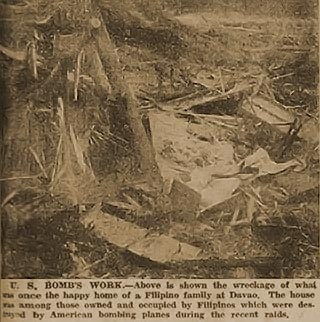

|
j
a v a s c r i p t |
September 6, 1944
Mrs. Klingler dropped in at 1700 to tell us that the Japanese will take half of Manga Avenue. The Swiss were informed through Maurer; we Filipinos got no advance notice. At Sociego, De las Rivas was given ten days notice, while the Wasmers and Sulzers were given a whole month. My first act was to stop watering the plants. My second will be to ask Sotelo to see Recto about it.

Tribune: "Davao civilians target of attacks" includes a picture of a shack blown to bits. The "American atrocities" resulted in "heavy casualties among women and children," but military objectives were left "practically intact" — much ado about 20-pound concussion bombs, deliberate strafing of civilians in coconut groves, American cruelty, and so on. People here think it's childish; they know about the Japanese wounded being secretly brought to Manila under cover of darkness. We're hearing reports of workers at airfields and some members of the PC deserting their jobs and taking to the hills. Two years ago Maharajah would have shrieked about the Davao bombings, today Icasiano ignored it to continue his spiel on profiteers, perhaps because the August 15 guerilla magazine mentioned his name along with Aquino and a Dr. Cañizares. Ignoring the partial blackout, the Japanese at the Casa Blanca turned on Bachrach's floodlights by the pool and went for a swim. |
|
|
|
|